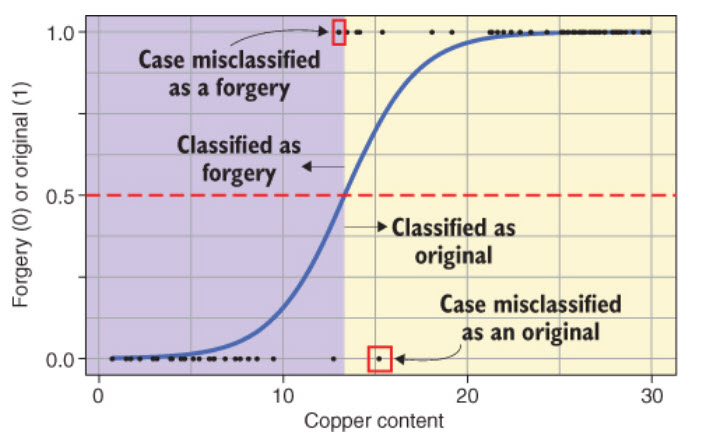
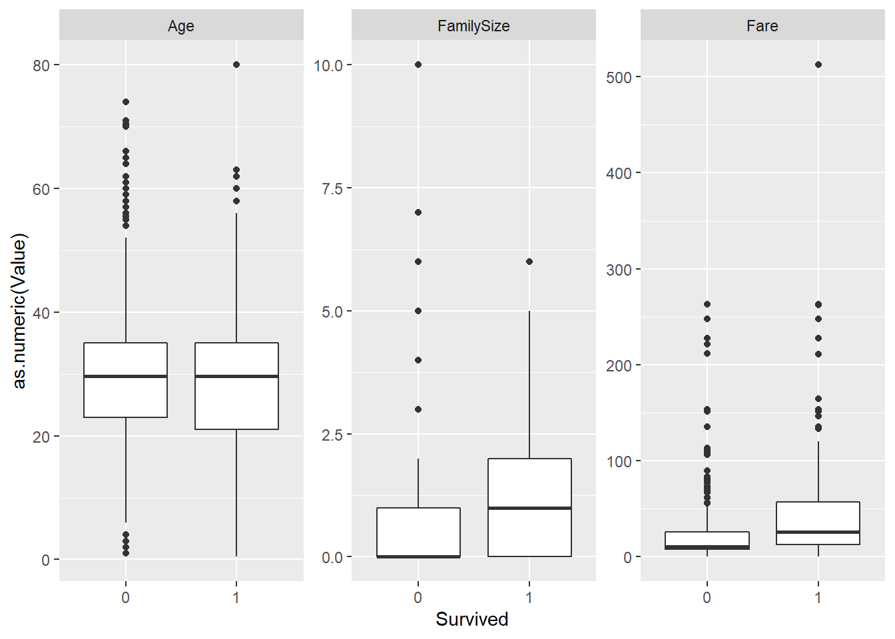
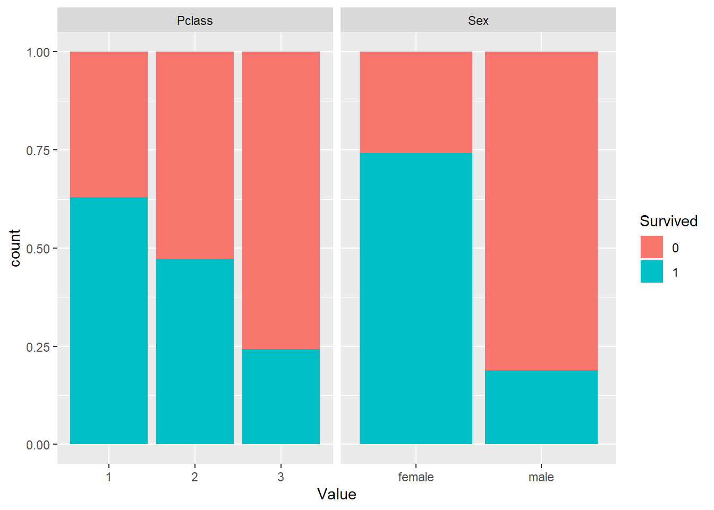

Chapter 10 - Logistic regression
Learning objectives
- Logistic regression
Introduction
Regression is a method used to determine the relationship between a dependent variable (the variable we want to predict) and one or more independent variables (the predictors available to make the prediction). There are a wide variety of regression methods, but in this course we will learn two: the logistic regression, which is used to predict a categorical dependent variable, and the linear regression, which is used to predict a continuous dependent variable.
In this chapter we focus on the binomial logistic regression (I’ll just refer to it as logistic regression or simply regression in the rest of the chapter), which means that the our dependent variable is dichotomous (e.g., yes or no, pass vs fail). Ordinal logistic regression (for ordinal dependent variables) and multinominal logistic regression (for variables with more than 2 categories) are beyond the scope of the course.
Logistic regression
Logisitic function
The logistic regression is called this way because it fits a logistic function (an s-shaped curve) to the data to model the relationship between the predictors and a categorical outcome. More specifically, it models the probability of an outcome (the dependent categorical variable) based on the value of the independent variable. Here’s an example:

The model gives us, for each value of the independent variable (Copper content, in this example), the probability (odds) that the painting is an original. The point where the logistic curve reaches .5 (50%) on the y-axis is where the cut-off happens: the model predicts that any painting with a copper content above that point is an original.
Odds
We can convert probabilities into odds by dividing the probability p of the one outcome by the probability of the other outcome, so because there are only two outcomes, then odds = p / 1-p.
The output of the regression model, however, is the natural logarithm of the odds: log odds = ln(p/1-p).
Logistic regression example
Loading and preparing data
library(tidyverse)
data <- read_csv("https://pmongeon.github.io/info6270/files/data/titanic.csv")
head(data)## # A tibble: 6 x 12
## PassengerId Survived Pclass Name Sex Age SibSp Parch Ticket Fare Cabin
## <dbl> <dbl> <dbl> <chr> <chr> <dbl> <dbl> <dbl> <chr> <dbl> <chr>
## 1 1 0 3 Braund~ male 22 1 0 A/5 2~ 7.25 <NA>
## 2 2 1 1 Cuming~ fema~ 38 1 0 PC 17~ 71.3 C85
## 3 3 1 3 Heikki~ fema~ 26 0 0 STON/~ 7.92 <NA>
## 4 4 1 1 Futrel~ fema~ 35 1 0 113803 53.1 C123
## 5 5 0 3 Allen,~ male 35 0 0 373450 8.05 <NA>
## 6 6 0 3 Moran,~ male NA 0 0 330877 8.46 <NA>
## # ... with 1 more variable: Embarked <chr>Choose set of predictors (independent variables)
Looking at our dataset, we can identify some variables that we think might have an effect on the probability that a passenger survived. In our model, we will choose Sex, Age, Pclass, and Fare. The SibSp and Parch variables represent, respectively, the combined number of sibblings and spouses a and the combined number of parents and children a passenger has on board. We will add them together to create a fifth predictor called FamilySize.
data <- data %>%
mutate(FamilySize = SibSp + Parch)We can now remove the variables that we don’t need in our model by selecting the ones we want to keep.
data <- data %>%
select(Survived, Sex, Age, Fare, FamilySize, Pclass)Set categorical variables as factors
Setting categorical variables as factors is always necessary when fitting regression models in R. In our case there are three: Sex, Survived, and Pclass
data <- data %>%
mutate(Sex = as_factor(Sex),
Survived = as_factor(Survived),
Pclass = as_factor(Pclass))Dealing with missing data
We can count the number of empty cells for each variable to see if some data is missing. We do this for each variable in the set below.
sum(is.na(data$Survived))## [1] 0sum(is.na(data$Sex))## [1] 0sum(is.na(data$Age))## [1] 177sum(is.na(data$Fare))## [1] 0sum(is.na(data$FamilySize))## [1] 0sum(is.na(data$Pclass))## [1] 0We have basically two choices. We do nothing and those cases will be left out of the regression model. or we fill the missing values in some way. When we have a lot of missing values (177 out of 891 observations is quite large), and leaving out these observations could negatively effect the performance of our regression model. So here, we will assign the average age for all 177 missing age values, which is a typical imputation mechanism to replace NA values with an estimated based on the available data.
# We use na.rm = TRUE otherwise mean(Age) would return NA due to the missing values.
data <- data %>%
mutate(Age = replace_na(Age, mean(Age, na.rm=TRUE)))Visualizing the relationships
To explore the relationship between variables. we can visualize the distribution of independent variable values for each value of the dependent variable. We can use box plots or violin plots for continuous independent variables and bar charts for the categorical variables. To make the process faster, let’s briefly untidy the data and use the gather() function to create key-value pairs for each observation of the dependent variable.
data_untidy <- gather(data, key = "Variable", value = "Value",
-Survived) # Creates key-value pairs for all columns except Survive
head(data_untidy)## # A tibble: 6 x 3
## Survived Variable Value
## <fct> <chr> <chr>
## 1 0 Sex male
## 2 1 Sex female
## 3 1 Sex female
## 4 1 Sex female
## 5 0 Sex male
## 6 0 Sex maleWe can now easily create box plots for all our independent variables and outcome.
data_untidy %>%
filter(Variable != "Pclass" & Variable != "Sex") %>%
ggplot(aes(Survived, as.numeric(Value))) +
facet_wrap(~ Variable, scales = "free_y") +
geom_boxplot(draw_quantiles = c(0.25, 0.5, 0.75))
And now we make a bar chart for our categorical independent variables.
data_untidy %>%
filter(Variable == "Pclass" | Variable == "Sex") %>%
ggplot(aes(Value, fill = Survived)) +
facet_wrap(~ Variable, scales = "free_x") +
geom_bar(position = "fill")
Creating the model
model <- glm(Survived ~ Sex + Age + Fare + FamilySize + Pclass, # the predicted variable and the predictors
data = data, # here we specify the dataset to use
family = binomial) # This indicates that we want to do a binomial regressionModel summary
summary(model)##
## Call:
## glm(formula = Survived ~ Sex + Age + Fare + FamilySize + Pclass,
## family = binomial, data = data)
##
## Deviance Residuals:
## Min 1Q Median 3Q Max
## -2.6536 -0.6155 -0.4318 0.6071 2.3990
##
## Coefficients:
## Estimate Std. Error z value Pr(>|z|)
## (Intercept) 1.033733 0.392913 2.631 0.008515 **
## Sexfemale 2.775928 0.198563 13.980 < 2e-16 ***
## Age -0.038822 0.007823 -4.963 6.95e-07 ***
## Fare 0.003218 0.002455 1.311 0.189900
## FamilySize -0.243029 0.067626 -3.594 0.000326 ***
## Pclass2 -1.000345 0.292863 -3.416 0.000636 ***
## Pclass3 -2.132429 0.289222 -7.373 1.67e-13 ***
## ---
## Signif. codes: 0 '***' 0.001 '**' 0.01 '*' 0.05 '.' 0.1 ' ' 1
##
## (Dispersion parameter for binomial family taken to be 1)
##
## Null deviance: 1186.7 on 890 degrees of freedom
## Residual deviance: 790.4 on 884 degrees of freedom
## AIC: 804.4
##
## Number of Fisher Scoring iterations: 5Converting log odds to odds ratio
exp(model$coefficients)## (Intercept) Sexfemale Age Fare FamilySize Pclass2
## 2.8115430 16.0535218 0.9619215 1.0032236 0.7842487 0.3677526
## Pclass3
## 0.1185490adding confidence intevals
odds_ratio <- cbind(Odds_Ratio = exp(model$coefficients), exp(confint(model, level = .95)))
odds_ratio## Odds_Ratio 2.5 % 97.5 %
## (Intercept) 2.8115430 1.30388998 6.1037936
## Sexfemale 16.0535218 10.96893302 23.9110681
## Age 0.9619215 0.94700049 0.9765295
## Fare 1.0032236 0.99872001 1.0086326
## FamilySize 0.7842487 0.68315465 0.8911004
## Pclass2 0.3677526 0.20650392 0.6522084
## Pclass3 0.1185490 0.06700311 0.2088522Model predictions
First we add to our data the probability that the passenger survived as calculated by the model.
data <- tibble(data,
Probability = model$fitted.values)Then we obtain the prediction by creating a new variable called prediction and setting the value to 1 if the calculated probability of survival is greater than 50% and 0 otherwise.
data <- data %>%
mutate(Prediction = if_else(Probability > 0.5,1,0))Then we can print a table comparing the model’s prediction to the real data.
table(Survived = data$Survived, Predicted = data$Prediction)## Predicted
## Survived 0 1
## 0 476 73
## 1 102 240Finally, we can calculate how well our model fits the data (how good was it at predicting the independent variable.
mean(data$Survived == data$Prediction)## [1] 0.8035915Summary
In this chapter we introduced the logistic regression model as a useful tool to predict a dichotomous categorical variable based on one or multiple predictors that can be either categorical or continuous. The R scripts provided will work with any dataset provided that they are in a tidy format. So you now have everything you need to try to predict categorical outcomes in all kinds of scenarios and with all kinds of data.
Lab
For this week’s lab, your task is to build a logistic regression model on a dataset of your choice following. I strongly encourage you to use the dataset that you will be using for your individual project, if it contains a dichotomous variable that you can try to predict using other variables in your dataset. I will be posting a template, along with other suitable datasets here and on Teams very shortly.